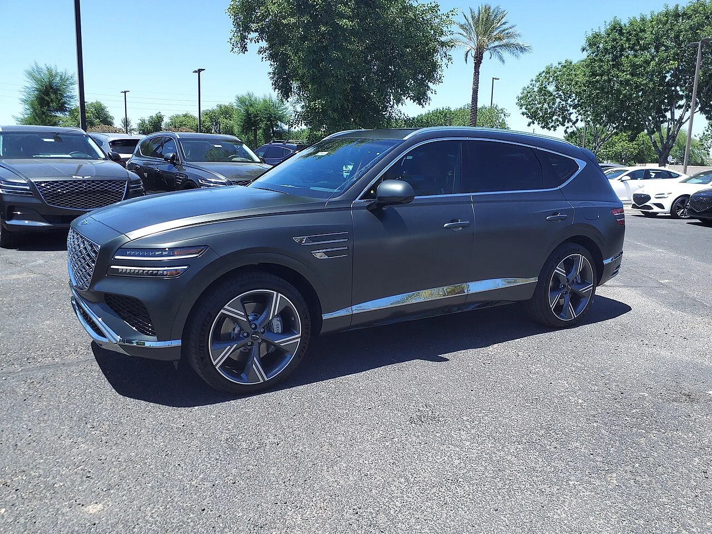

▲ GV80과 GV70 두 차종이 미국 누적 판매의 절반 이상을 만들었다 ⓒ Wikimedia Commons
제네시스가 미국에서 누적 45만 4,049대를 기록했습니다. 2016년 진출 이후 10년치 합계입니다.
이 숫자를 만든 것은 세단이 아닙니다. GV70과 GV80 두 차종이 26만 8,724대로 전체의 절반을 넘습니다.
G90과 G80으로 출발한 브랜드가 SUV로 먹고사는 구조가 됐습니다.
1. 숫자부터
| 구분 | 수치 | 비고 |
|---|---|---|
| 누적 (2016~2026.7) | 454,049대 | — |
| 2025년 연간 | 82,331대 | 첫 8만 대 돌파 |
| 2026년 상반기 | 39,088대 | 역대 상반기 최대 |
| 2026년 7월 | 6,947대 | 22개월 연속 증가 |
| GV70+GV80 누적 | 268,724대 | 전체의 약 59% |
| SUV 비중 | 약 61.5% | — |
22개월 연속 증가라는 항목이 눈에 띕니다. 미국 럭셔리 시장에서 2년 가까이 한 달도 빠지지 않고 전년을 넘겼다는 뜻입니다.
2. 세단 브랜드가 SUV 브랜드가 된 과정
제네시스는 2016년 세단으로 출발했습니다. G90(당시 EQ900)과 G80이 전부였습니다.
지금은 SUV가 61.5%입니다. 이 전환은 브랜드의 의도라기보다 시장이 만든 결과에 가깝습니다. 미국 시장에서 럭셔리 세단 수요가 계속 줄고 SUV로 이동한 흐름과 정확히 겹칩니다.
| 시기 | 중심 |
|---|---|
| 2016~2019 | G90·G80 — 세단 중심 |
| 2020~2021 | GV80·GV70 투입 — 전환기 |
| 2022~현재 | SUV 61.5% — GV70·GV80이 판매 1·2위 |
26만 8,724대라는 숫자는 이 두 차종에 대한 의존도이기도 합니다. 특정 두 모델이 전체의 59%를 만든다는 것은, 이 두 차종의 세대교체 시점이 브랜드 전체 실적을 흔들 수 있다는 뜻입니다.

▲ GV70. GV80과 함께 미국 판매의 절반 이상을 담당한다
3. 45만 대는 빠른 편인가
10년에 45만 대면 연평균 4만5,000대 수준입니다. 다만 초기 몇 년의 판매가 미미했다는 점을 감안하면, 실제 속도는 최근 5년에 집중돼 있습니다.
2025년 8만2,331대는 브랜드 최대치입니다. 2026년 상반기 3만9,088대는 이 흐름을 유지하는 페이스입니다. 단순 산술로 연간 8만 대선을 다시 노려볼 수 있는 위치입니다.
럭셔리 브랜드 신규 진입에서 이 속도가 갖는 의미는 작지 않습니다. 미국에서 새 프리미엄 브랜드가 자리를 잡는 데는 통상 20년 이상이 걸린다고 평가돼 왔습니다.
4. 다음에 들어갈 카드
| 모델 | 성격 |
|---|---|
| GV90 | 초대형 플래그십 전동화 SUV — B필러 없는 코치도어 |
| GV60 마그마 | 고성능 전기차 |
| SUV 하이브리드 | 기존 SUV 라인업에 하이브리드 추가 |
세 카드의 성격이 서로 다릅니다. GV90은 브랜드 상단을 올리는 역할, 마그마는 성능 이미지, 하이브리드는 실제 판매량입니다.
이 중 실적에 가장 크게 작용할 항목은 세 번째입니다. 미국 시장에서 하이브리드 수요가 전기차보다 빠르게 늘고 있고, GV70·GV80이라는 볼륨 모델에 직접 얹히는 구성이기 때문입니다.

▲ GV90의 원형인 네오룬 콘셉트. 브랜드 상단을 올리는 역할을 맡는다
5. 남은 변수
| 변수 | 내용 |
|---|---|
| 관세 | 한국산 완성차에 대한 관세 논의가 이어지고 있다 |
| 모델 집중도 | 두 차종이 59% — 세대교체 시점이 실적을 흔들 수 있다 |
| 전동화 속도 | 미국 전기차 수요 둔화로 GV60·GV70 전동화 모델의 부담이 크다 |
| 딜러망 | 전용 전시장 확충이 진행 중 |

▲ GV80은 GV70과 함께 미국 판매의 절반 이상을 차지한다
6. 정리
제네시스의 미국 누적 판매가 45만 4,049대가 됐습니다. 2016년 진출 이후 10년치입니다.
GV70과 GV80 두 차종이 26만 8,724대로 전체의 약 59%를 차지하고, SUV 비중은 61.5%입니다. 세단으로 출발한 브랜드가 SUV 중심으로 재편된 결과입니다.
2025년 8만2,331대로 처음 연 8만 대를 넘겼고, 2026년 상반기 3만9,088대로 역대 상반기 최대를 기록했습니다. 7월까지 22개월 연속 전년 동월 대비 증가했습니다. 다음 카드로는 GV90, GV60 마그마, SUV 하이브리드가 예고돼 있습니다.